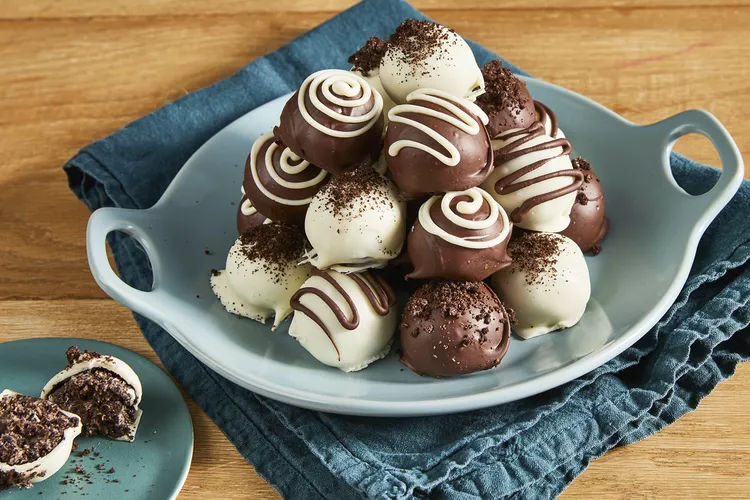

Oreo Balls

Oreo balls are chocolaty treats filled with a decadent mix of cream cheese and crushed chocolate cookies. They make a great Christmas gift! Drizzle with chocolate or decorate with colored sugar, then arrange in a small container and add a gift tag.
Ingredients
- 36 Oreo cookies, finely crushed
- 1 (8 ounce) package cream cheese, softened
- waxed paper
- 16 ounces semisweet baking chocolate, melted
Steps
- Mix crushed Oreo cookies and cream cheese in a large bowl until well blended.
- Use your hands to shape mixture into 48 (1-inch) balls; place on a tray and freeze until thoroughly chilled, about 10 minutes.
- Line a shallow pan with waxed paper. Dip Oreo balls in melted chocolate; place in a single layer on the prepared pan.
- Refrigerate for 1 hour or until firm. Store in a covered container in the refrigerator.
Back to Index